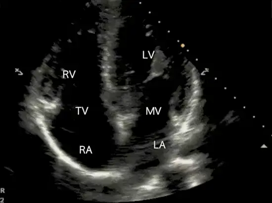

POCUS Tips › Cardiac
Apical Four-ChamberA4C
The only view that puts all four chambers side by side — the place to size the right heart and measure TAPSE.
Open the interactive view with the loop and quiz →
Where to put the probe
- Window
- Cardiac apex — 5th interspace, mid-clavicular, at or just below the nipple line
- Marker
- Patient’s LEFT (~3 o’clock), beam aimed at the right shoulder
- probe
- phased array
- preset
- cardiac
- depth
- 16 cm
Get the view
- Left lateral decubitus if the patient can manage it, then palpate for the point of maximal impulse.
- Marker to the patient’s left, probe nearly flat on the chest, aiming up at the right shoulder.
- Slide laterally and inferiorly until all four chambers appear with the septum running straight down the screen.
- Check you are at the true apex: the LV should be longer than it is wide. If it looks squat, you are foreshortened.
What you are looking at
- Left ventricle
- Screen right, apex at the top. Longer than wide when the view is honest.
- Right ventricle
- Screen left, should be about two-thirds the LV and not reach the apex.
- Tricuspid valve
- The lateral annulus is where TAPSE is measured.
- Mitral valve
- Compare leaflet excursion side to side with the tricuspid.
- Right atrium
- Enlarges with chronic right-sided pressure load.
- Left atrium
- Dilates with chronic left-sided filling pressure or mitral disease.
Numbers that matter
| Measure | Normal | Call it abnormal when |
|---|---|---|
| TAPSEM-mode through the lateral tricuspid annulus | ≥ 17 mm | < 17 mm — RV systolic dysfunction |
| RV : LV sizeend-diastole, mid-cavity | ≤ 0.6 | RV approaches or exceeds LV size |
| MAPSEM-mode through the lateral mitral annulus | ≥ 10 mm | < 10 mm suggests reduced EF |
| McConnell’s signwatch the RV free wall through a full cycle | absent | akinetic mid-free wall with a preserved apex — specific but not sensitive for acute PE, and RV infarction can produce the same pattern |
Don’t be fooled — pitfalls
- Foreshortening is the classic apical errorAngling up shortens the ventricle, shrinks apparent volumes and inflates apparent function. The LV must be longer than wide.
- The easiest place to fake a dilated RVAn oblique plane cuts the RV at its widest. Confirm RV size in PSAX and subcostal before you commit to RV strain.
- A thick RV free wall suggests a chronic componentFree wall over 5 mm means the RV has been under pressure for months — think pulmonary hypertension rather than a first insult, but acute-on-chronic disease exists, so it does not rule out a fresh clot on top.
- A visually huge LA with the apex off screenYou are too medial. Slide laterally and downward before believing the chamber sizes.
Bad image? Fix it
- Lung keeps sliding inExhale and hold. If the patient is ventilated, ask for a brief expiratory pause.
- Cannot find the apexDrop one interspace and move laterally — the apex sits lower and more lateral than most people expect, often under breast tissue.
- Chambers dark and speckledApical windows are deep, so raise gain slightly and use a lower frequency or harmonics.
- TAPSE tracing looks flatKeep the M-mode line parallel to RV long-axis motion; an off-axis line under-reads annular excursion.
So what — what the finding changes
- Big RV + TAPSE under 17 + hypotensionAcute RV strain pathway. Consider PE, avoid volume loading, get definitive imaging fast.
- All four chambers dilatedReads as chronic cardiomyopathy rather than an acute insult — treat as decompensated chronic failure.
- Effusion with right-heart collapseTamponade physiology. Prepare for drainage while confirming subcostally.
Educational use only. Not for diagnosis or treatment decisions — confirm findings with formal imaging and your own judgment. By Yonathan Daniel, MD · About · Last reviewed 2026-09-15.